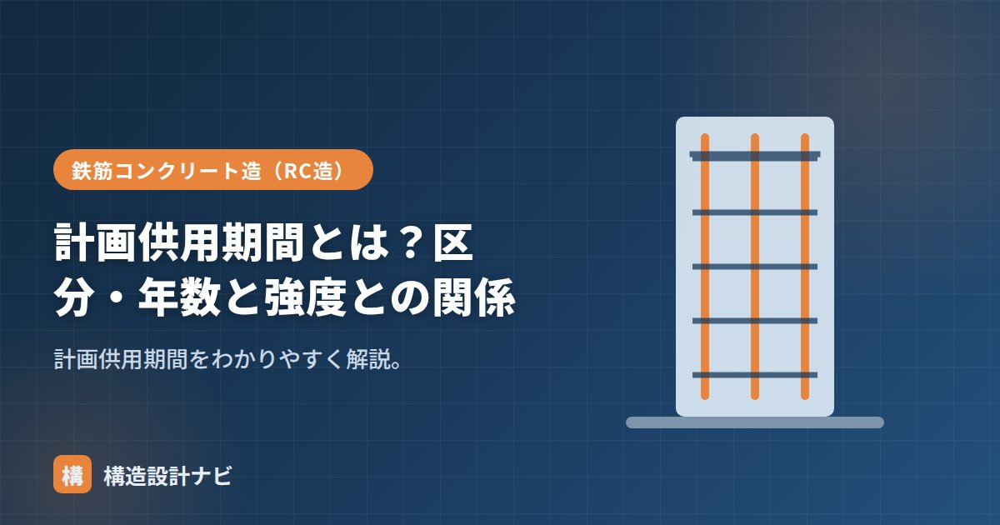

計画供用期間とは？区分・年数と強度との関係

計画供用期間（けいかくきょうようきかん）とは、建物を計画的に使い続ける期間のことです。読んで字のごとく「計画」段階で「供用」する「期間」を決める、という意味で、実際に何年もつかという結果論ではなく、設計者・建築主があらかじめ目標として設定する期間である点がポイントです。この期間の長さが、コンクリートの耐久性（強度・かぶり厚さなど）を決める前提になります。
- 計画供用期間は建物を計画的に使い続けようとする期間。短期・標準・長期・超長期の4区分。
- 年数の目安はおよそ30・65・100・200年。
- 期間が長いほど耐久設計基準強度が高く、水セメント比の上限が厳しくなる。
意味と区分
JASS5では、計画供用期間を4つの級に区分し、それぞれおおよその年数の目安があります。
| 級 | 年数の目安 |
|---|---|
| 短期 | およそ30年 |
| 標準 | およそ65年 |
| 長期 | およそ100年 |
| 超長期 | およそ200年 |
なぜ区分するのか
すべての建物に一律の耐久性を要求すると、短い期間しか使わない建物までコストの高い高耐久仕様にする必要が生じ、無駄が生まれます。逆に、長く使うことを想定した建物を標準的な仕様のまま設計すると、供用期間の途中で劣化が進み、大規模な補修が必要になりかねません。計画供用期間という考え方は、建物ごとの用途・重要度に応じて必要な耐久性のレベルを合理的に選べるようにするための枠組みです。
強度との関係
長く使うほど、中性化や劣化に耐える必要があるため、計画供用期間が長いほど耐久性の要求が厳しくなります。具体的には耐久設計基準強度が高く、水セメント比の上限が小さくなります（短期Fd18・標準24・長期30・超長期36N/mm²）。水セメント比を小さくするとコンクリートの緻密性が増し、鉄筋を保護するかぶり部分の中性化速度を遅らせられるため、結果として鉄筋の腐食開始までの年数を延ばせます。
実務での考え方
一般的な戸建て住宅や事務所ビルでは「標準」の区分（約65年）を採用することが多く、庁舎や文化財的な価値を持つ建物、あるいは長期優良住宅の認定を受ける建物では「長期」以上の区分が選ばれることがあります。逆に、仮設に近い建物や短期間の使用が明確な建物では「短期」を採用し、過剰な仕様を避けることも合理的な設計判断です。
Q1. 計画供用期間を長く設定すると、建設コストはどう変わりますか？
耐久設計基準強度が上がり水セメント比の上限が下がるため、一般に使用するセメント量が増え、コンクリートの材料費はやや高くなります。ただし、長期的に見れば大規模修繕の頻度を減らせる可能性があり、ライフサイクルコスト全体で評価することが大切です。
Q2. 計画供用期間を過ぎると建物は使えなくなりますか？
いいえ、計画供用期間はあくまで設計上の目標値であり、これを超えたら即座に使用不可になるわけではありません。実際の耐用年数は維持管理の状態にも左右されるため、適切な点検・補修を行えば期間を超えて使用され続ける建物も多くあります。
建築主との打合せで「標準」と「長期」の違いを説明すると、多くの方は年数の差よりコストの差に反応します。将来の大規模修繕費まで含めて比較して見せると、長期を選ぶ判断に納得してもらえることが多いです。
「耐久設計基準強度」「設計基準強度と品質基準強度」「耐久性と耐久年数」をどうぞ。
まとめ
- 計画供用期間は建物を計画的に使う期間。短期・標準・長期・超長期の4区分。
- 目安は約30・65・100・200年。用途・重要度に応じて選ぶ。
- 長いほど耐久設計基準強度が高く、水セメント比の上限が厳しくなる。